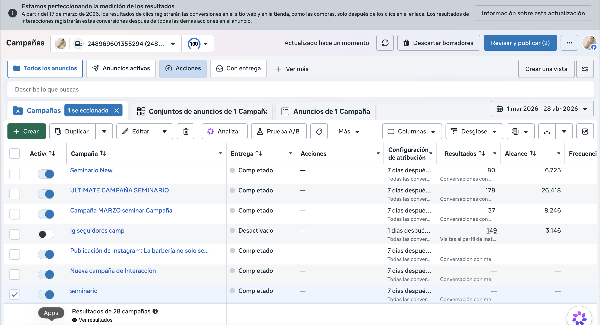
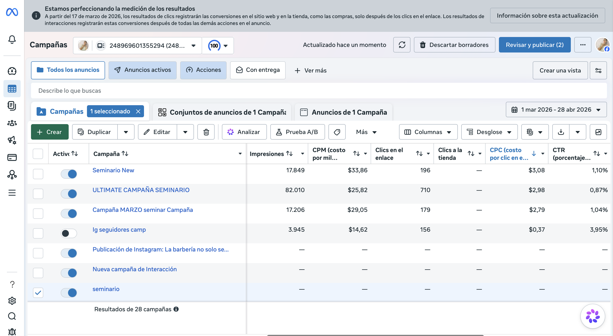
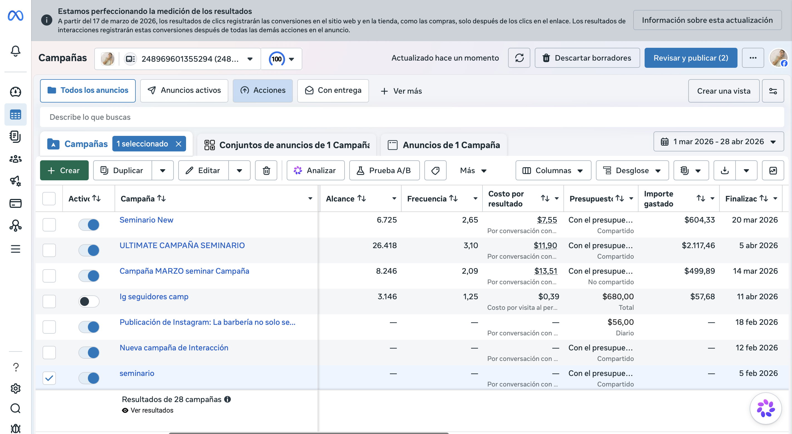

“La campaña funcionó porque hubo una experiencia bien construida detrás: contenido que conectó, una oferta clara y un sistema digital que llevó a la gente del interés a la acción.”
Portafolio de performance y estrategia digital
Contenido, tráfico y cierre comercial en un solo sistema digital.
YAWTIK crea experiencias digitales completas: identidad visual, producción audiovisual, páginas web, campañas publicitarias y seguimiento comercial para convertir atención en ventas reales.
Caso de éxito
Un evento sold out impulsado por estrategia, contenido y campañas.
Este seminario de barbería no dependió solo de anuncios. La exposición vino de una mezcla entre material audiovisual de alto nivel, una propuesta clara y campañas que amplificaron el mensaje hasta convertir interés en asistencia real.
Qué resuelve YAWTIK
No solo lanzamos campañas. Diseñamos el recorrido completo de venta.
Nuestro enfoque une creatividad, estructura comercial y performance. Cada anuncio funciona mejor cuando detrás existe una marca bien presentada y un proceso claro para convertir la atención en ingresos.
Producción de contenido
Grabación con cámara profesional, edición estratégica y piezas pensadas para captar atención y elevar la percepción de marca.
Infraestructura digital
Sitios web, páginas de captación, mensajes comerciales y activos digitales listos para sostener el tráfico y la conversión.
Performance y optimización
Campañas, segmentación, lectura de métricas y ajustes continuos para mejorar alcance, clics, resultados y rentabilidad.
Diagnóstico
Contenido
Landing o activo
Campaña
Seguimiento
Cierre
Resultados de campañas
Métricas reales que respaldan la ejecución.
Datos consolidados de campañas activas en Meta Ads. Cada campaña tuvo un objetivo principal distinto, por eso se presenta su métrica central junto con alcance, clics e inversión.
Comparativa de campañas
Periodo visible en capturas: del 1 de marzo de 2026 al 28 de abril de 2026.
| Campaña | Resultado principal | Alcance | Impresiones | Clics al enlace | CTR | CPC | Gasto |
|---|
Respaldo visual
Capturas reales del administrador de anuncios.
Se incluyen vistas del panel de Meta Ads para reforzar transparencia y confianza al presentar el caso.



Cierre
YAWTIK construye sistemas digitales que venden con evidencia.
Este portafolio resume una idea simple: cuando la estrategia, el contenido y la ejecución publicitaria trabajan juntos, el resultado deja de ser solo alcance y se convierte en negocio.
Contacto
Conversemos sobre el siguiente crecimiento de tu marca.
Si quieres una estrategia digital completa, contenido de alto impacto y campañas con intención comercial real, aquí tienes contacto directo con el equipo de YAWTIK.
Calendario
Disponibilidad
Agenda visible para llamadas de diagnóstico, seguimiento y sesiones de estrategia.
Disponible
Limitado
No disponible
Lun
Mar
Mié
Jue
Vie
Sáb
Dom
Lun - Jue
10:00 a.m. - 6:00 p.m.
Viernes
10:00 a.m. - 2:00 p.m.
Sáb - Dom
Atención sujeta a confirmación